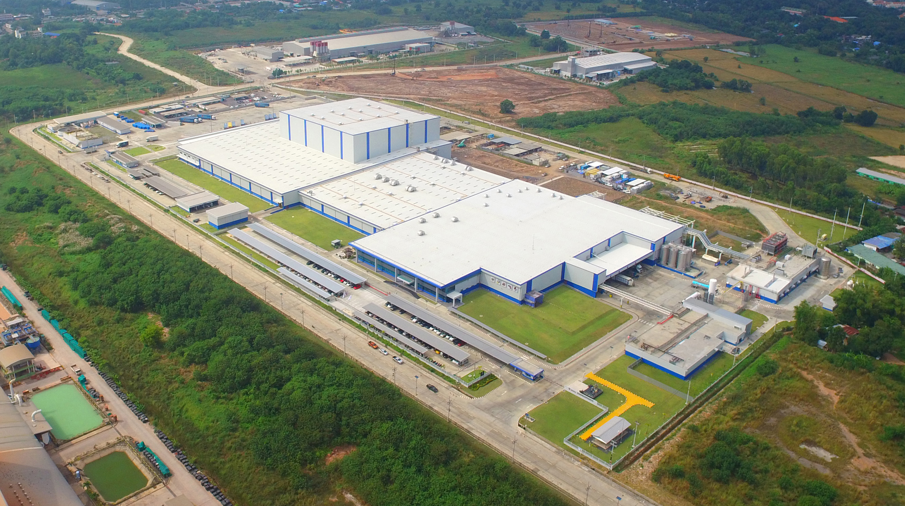

At Advance Analytik, we offer comprehensive engineering and consultancy services designed to maximize the efficiency and effectiveness of your analytical instrumentation. Our expert team brings years of industry experience, providing solutions that streamline processes, ensure compliance, and enhance operational performance. Whether you need support with instrumentation selection, regulatory adherence, or process optimization, we are dedicated to delivering tailored strategies that meet your unique needs.

Our team consists of seasoned professionals with deep expertise in analytical instrumentation and consultancy.
We recognize that each operation is unique; hence, we tailor our services to meet your specific challenges and goals.
From initial consultation to ongoing support, we provide a full spectrum of services to ensure your success.
Our clients have consistently achieved enhanced operational performance and regulatory compliance through our services.